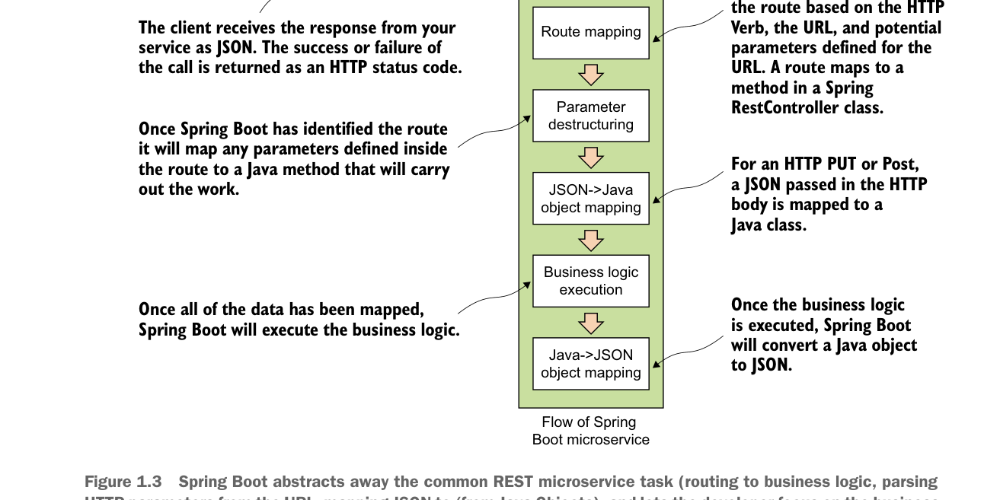

Spring Boot trừu tượng hóa các tác vụ REST microservice phổ biến (định tuyến đến logic nghiệp vụ, phân tích tham số HTTP từ URL, ánh xạ JSON sang/từ đối tượng Java), và cho phép nhà phát triển tập trung vào logic nghiệp vụ của dịch vụ.
Trong ví dụ này, bạn sẽ có một lớp Java duy nhất có tên simpleservice/src/com/thoughtmechanix/application/simpleservice/Application.java dùng để phơi bày một điểm cuối REST có tên /hello.
Bảng liệt kê sau đây trình bày mã cho Application.java.
Hello World với Spring Boot: một microservice Spring đơn giản
package com.thoughtmechanix.simpleservice;
import org.springframework.boot.SpringApplication;
import org.springframework.boot.autoconfigure.SpringBootApplication;
import org.springframework.web.bind.annotation.RequestMapping;
import org.springframework.web.bind.annotation.RequestMethod;
import org.springframework.web.bind.annotation.RestController;
import org.springframework.web.bind.annotation.PathVariable;